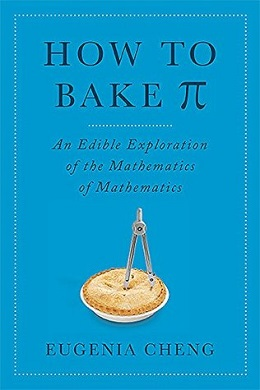

How to bake π, by Cheng
Tuesday July 28, 2026
It may not have won a Pulitzer, but Cheng's book reminds me of nothing quite so much as Gödel, Escher, Bach. It's committed to its gimmick, it's fun to read, it's self-involved, its success as an argument is incomplete, there's some math but there could have been more. GEB had better editing.
Just as I was most interested in the incompleteness theorem bits of GEB, How to bake π is ostensibly about category theory and that's what I was hoping to learn more about. I've tried to learn about category theory in the past (ex) and I've never felt like I've "gotten" it. The book has some bits about category theory, but I still don't feel like I have a good understanding of category theory really. (Possibly there's more in there than I realize because the author avoids formal language... Was she talking about the Yoneda Lemma in there, maybe?)
Luckily, what Cheng actually wants to talk about is philosophy of math. (The book contributes many quotes to my "mathematics is" quote collection.) I largely agree with her ideas on the importance of "illumination" (understanding at a level different from formal proof) and math as easy relative to the complexity of the "real world" (which also appears in More Everything Forever). I'm less sure, but I also suspect we both think about non-mathematical beliefs as being fundamentally supportable only by "axioms" taken on faith.
It's unfortunate that the copy editing isn't as tight as it could be. There's at least one "and and" in there. On page 199 there's a composition of a function from A to B with a function from B to C and it somehow gives a function from A to B. Toward the end, there start being references to things that came earlier except they never did come earlier. Distracting.

The story I'm going to tell is about abstract mathematics. I'm going to argue that its power and beauty lie not in the answers it provides or the problems it solves, but in the light that it sheds. That light enables us to see clearly, and that is the first step to understanding the world around us. (page 13)
In the end mathematics is simply about things that are true. (page 116)
Mathematics is easy, as long as you have the right definition of "easy" (page 143, section header)
A rope over the top of a fence has the same length on each side, and weighs one-third of a pound per foot. On one end hangs a monkey holding a banana, and on the other end a weight equal to the weight of the monkey. The banana weighs 2 ounces per inch. The length of the rope in feet is the same as the age of the monkey, and the weight of the monkey in ounces is as much as the age of the monkey's mother. The combined age of the monkey and its mother is 30 years. Half the weight of the monkey plus the weight of the banana is a quarter the sum of the weights of the rope and the weight. The monkey's mother is half as old as the monkey will be when it's three times as old as its mother was when she was half as old as the monkey will be when it's as old as its mother will be when she's four times as old as the monkey was when it was twice as old as its mother was when she was a third as old as the monkey was when it was as old as its mother was when she was three times as old as the monkey was when it was a quarter as old as it is now. How long is the banana?
To monkeys really hold bananas that weigh more than half their body weight?
Mathematics is not life (page 156, section header)
The author includes a proof:
So: math is easy, life is hard, therefore math isn't life. (page 156)
The pursuit of mathematics is the process of working out exactly what is easy, and the process of making as many things easy as possible. (page 156)
The process of working out exactly which parts of math are easy, and the process of making as many parts of math easy as possible. (page 162, defining category theory)
The freedom of this situation is a type of universal property that is closely related to "forgetting structure," as we discussed in the chapter on structure. (page 253)
I don't see where that was discussed in the chapter on structure. (On page 211 there's another "we saw" that I can't find the antecedent for either.)
"Mathematics makes a steady advance, while philosophy continues to flounder in unending bafflement at the problems it confronted at the outset." (page 263, quoting Michael Dummett in The Philosophy of Mathematics)
Proof has a sociological role; illumination has a personal role. Proof is what convinces society; illumination is what convinces us. (page 274)
In a way, mathematics is like an emotion, which can't ever be described precisely in words—it's something that happens inside an individual. What we write down is merely a language for communicating those ideas to others, in the hope that they will be able to reconstruct the feeling within their own mind. (page 275)
I think that the key characteristic of proof is not its infallibility, but its sturdiness in transit. Proof is the best medium for communicating my argument to X in a way that will not be in danger of ambiguity, misunderstanding, or distortion. Proof is the bridge for getting from one person to another, but some translation is needed on both sides.
When I read someone else's math, I always hope that the author will have included a raeson and not just a proof. When this does happen, the benefits are very great. Unfortunately, a lot of math is taught without any attempt at illumination. Even worse, it's sometimes taught without any explanation at all. But even if it is explained, not every explanation is illuminating. (page 277)
I agree especially with the the second paragraph here.
Category theory seeks to illuminate math. (page 278)